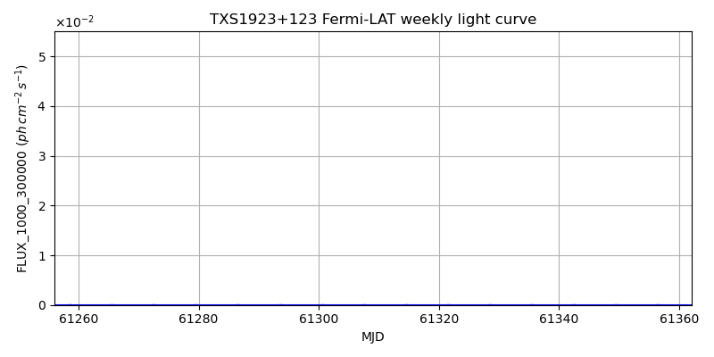

LAT Lightcurve site: https://fermi.gsfc.nasa.gov/ssc/data/access/lat/msl_lc/source/TXS_1923p123
NED: Query
Time of last update of this page: UT: 2026-11-20 16:26 (MJD: 61364.685)
| Property | Value |
|---|---|
| R.A. | 19:25:40.80 |
| Dec. | 12:27:39.6 |
| z | 0.000 |
| 3FGL SpectrumType | PowerLaw |
| 3FGL PL Index | 2.61 |
| 3FGL Flux_100_300000 | 5.09e-08 1 / (s cm2) |
| 3FGL Flux_1000_300000 | 1.26e-09 1 / (s cm2) |
| 3FGL Flux >200 GeV | 2.54e-13 1 / (s cm2) |
| 3FGL Extrap. Crab >200 GeV | 0.00 |
| 3FGL Flux After EBL Absorption >200GeV | 2.54e-13 1 / (s cm2) |
| 3FGL EBL Crab Fraction >200GeV | 0.00 |
| MJD | dMJD | Flux | dFlux | Frac3FGL | FracCrab>200GeV | EBLFracCrab>200GeV |
|---|---|---|---|---|---|---|
| 61359.50 | 0.50 | 1.29e-06 | 0.00e+00 | 0.00 | 0.00 | 0.00 |
| 61360.50 | 0.50 | 1.55e-06 | 0.00e+00 | 0.00 | 0.00 | 0.00 |
| 61361.50 | 0.50 | 8.68e-07 | 0.00e+00 | 0.00 | 0.00 | 0.00 |
| 61362.50 | 0.50 | 9.62e-08 | 0.00e+00 | 0.00 | 0.00 | 0.00 |
| 61363.50 | 0.50 | 6.88e-07 | 0.00e+00 | 0.00 | 0.00 | 0.00 |

| MJD | dMJD | Flux | dFlux | Frac3FGL | FracCrab>200GeV | EBLFracCrab>200GeV |
|---|---|---|---|---|---|---|
| 61328.50 | 3.50 | 1.22e-08 | 0.00e+00 | 0.00 | 0.00 | 0.00 |
| 61335.50 | 3.50 | 2.34e-08 | 0.00e+00 | 0.00 | 0.00 | 0.00 |
| 61342.50 | 3.50 | 1.28e-08 | 0.00e+00 | 0.00 | 0.00 | 0.00 |
| 61349.50 | 3.50 | 1.96e-08 | 0.00e+00 | 0.00 | 0.00 | 0.00 |
| 61356.50 | 3.50 | 1.30e-08 | 0.00e+00 | 0.00 | 0.00 | 0.00 |

| MJD | dMJD | Flux | dFlux | Frac3FGL | FracCrab>200GeV | EBLFracCrab>200GeV |
|---|---|---|---|---|---|---|
| 61359.50 | 0.50 | 3.63e-08 | 0.00e+00 | 0.00 | 0.00 | 0.00 |
| 61360.50 | 0.50 | 2.58e-08 | 0.00e+00 | 0.00 | 0.00 | 0.00 |
| 61361.50 | 0.50 | 2.59e-08 | 0.00e+00 | 0.00 | 0.00 | 0.00 |
| 61362.50 | 0.50 | 1.38e-08 | 0.00e+00 | 0.00 | 0.00 | 0.00 |
| 61363.50 | 0.50 | 2.35e-08 | 0.00e+00 | 0.00 | 0.00 | 0.00 |

| MJD | dMJD | Flux | dFlux | Frac3FGL | FracCrab>200GeV | EBLFracCrab>200GeV |
|---|---|---|---|---|---|---|
| 61328.50 | 3.50 | 4.23e-09 | 0.00e+00 | 0.00 | 0.00 | 0.00 |
| 61335.50 | 3.50 | 7.34e-09 | 0.00e+00 | 0.00 | 0.00 | 0.00 |
| 61342.50 | 3.50 | 3.52e-09 | 0.00e+00 | 0.00 | 0.00 | 0.00 |
| 61349.50 | 3.50 | 3.61e-09 | 0.00e+00 | 0.00 | 0.00 | 0.00 |
| 61356.50 | 3.50 | 4.06e-09 | 0.00e+00 | 0.00 | 0.00 | 0.00 |
--------------------------------------------------------- Using user-supplied coords: 19:25:40.80 12:27:39.6 2000 --------------------------------------------------------- FLWO UT night of: 2026-11-21 Local Sid. @ Midnight: 03:37 Sunset (-15.0) (local, UT): 18:33 01:33 Sunrise (-15.0) (local, UT): 05:47 12:47 Moonrise (local, UT): Moonset (local, UT): 03:40 10:40 Moon phase: 0.85 --------------------------------------------------------- AzTime LSID UT Obj_el Obj_az Mn_el Mn_az Sep. --------------------------------------------------------- 18:33 22:09 01:33 48.2 252.1 47.9 117.4 76.3 19:03 22:39 02:03 42.0 257.7 53.3 125.0 76.4 19:33 23:09 02:33 35.7 262.5 58.2 134.7 76.5 20:03 23:39 03:03 29.4 266.9 62.3 146.9 76.6 20:33 00:09 03:33 23.0 270.9 65.1 162.1 76.8 21:03 00:39 04:03 16.6 274.7 66.3 179.7 76.9 21:33 01:09 04:33 10.3 278.5 65.4 197.5 77.0 22:03 01:39 05:03 4.1 282.3 62.9 213.2 77.1 22:33 02:09 05:33 -1.3 286.3 59.0 225.9 77.3 23:03 02:39 06:03 -8.4 290.4 54.2 235.9 77.4 23:33 03:09 06:33 -14.3 294.8 48.9 243.9 77.5 00:03 03:39 07:03 -20.0 299.7 43.2 250.4 77.7 00:33 04:10 07:33 -25.4 305.1 37.3 255.9 77.8 01:03 04:40 08:03 -30.4 311.1 31.2 260.7 78.0 01:33 05:10 08:33 -35.0 318.0 25.1 265.1 78.2 02:03 05:40 09:03 -39.0 325.7 19.0 269.2 78.4 02:33 06:10 09:33 -42.2 334.4 12.9 273.0 78.6 03:03 06:40 10:03 -44.4 344.0 6.8 276.9 78.8 03:33 07:10 10:33 -45.6 354.3 1.0 280.7 79.1 04:03 07:40 11:03 -45.7 4.8 -4.9 284.7 79.3 04:33 08:10 11:33 -44.6 15.1 -11.1 288.8 79.6 05:03 08:40 12:03 -42.4 24.8 -16.8 293.2 79.8 05:33 09:10 12:33 -39.3 33.5 -22.3 298.1 80.1 05:47 09:25 12:47 -37.5 37.4 -24.8 300.5 80.3 --------------------------------------------------------- Dark hours >55 deg.: 0.00